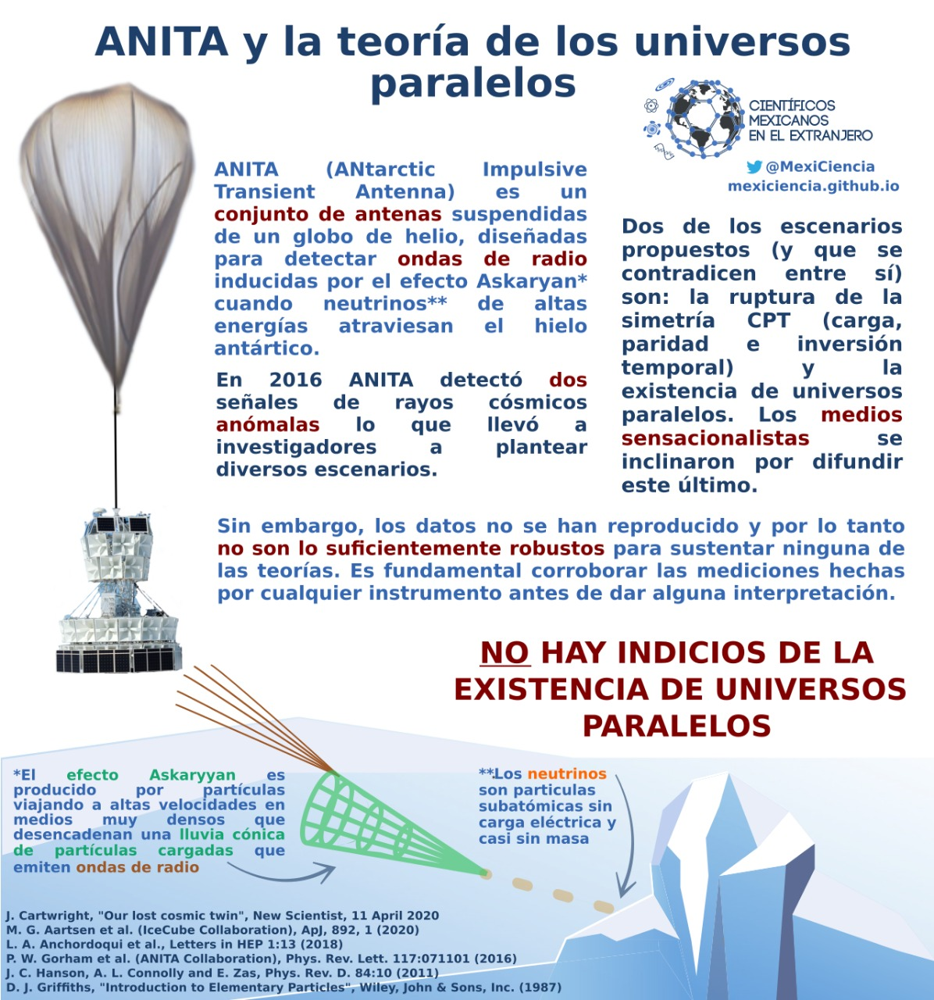

En fechas recientes aparecieron noticias üì∞ con titulares como: “Cient√≠ficos de la NASA descubren un universo paralelo con el tiempo invertido” üåå‚è≥ Esa noticia es falsa üôÖ ya que no existe evidencia suficiente.
ANITA (ANtarctic Impulsive Transient Antenta) es un conjunto de antenas suspendidas de un globo de helio, dise√±aas para detectar ondas de radio inducidas por el efecto Askaryan cuando neutrinos de altas energ√≠as atraviesan el hielo ant√°rtico. ANITA a antenita que detect√≥ las particulitas an√≥malas¬†üì°. Nuestro equipo de f√≠sicos¬†üë©‚Äçüî¨ü뮂Äçü†se dio a la tarea de reunir la informaci√≥n completa para explicarte por qu√© no existen los universos paralelos.
ANITA detect√≥¬†üì°¬†dos rayos c√≥smicos an√≥malos. La explicaci√≥n que se dio a dicho suceso fue que para que estos rayos existieran como tal, se deb√≠a romper la simetr√≠a CPT (carga, paridad, inversi√≥n temporal)¬†‚ûï‚ûñüîÉ‚åõ¬†√≥ ¬°que exist√≠an los universos paralelos!¬†üåå Ambas hip√≥tesis son falsas y te explicamos por qu√©.
Primero que nada, ¿a qué se refieren con un rayo cósmico anómalo? A uno que tendría que provenir de un neutrino tau ¡que fuese partícula de Majorana y que además tuvieran una enorme masa y su quiralidad fuera dextrógira!
Nada sencillo el asunto ü§î Vamos por partes.
1️⃣ La simetría CPT se debe cumplir para mantener la invariancia de las leyes dinámicas que rigen la física.
2️⃣ Un neutrino es una partícula subatómica ⚛ con masa muy pequeña, sin carga y cuya interacción con la materia es casi indetectable.
3Ô∏è‚É£ La quiralidad ü§≤ de los neutrinos tau es lev√≥gira ‚è™ y la de su anti-part√≠cula (los anti-neutrinos tau) es dextr√≥gira ‚è©
4️⃣ Una partícula de Majorana es una partícula que es su propia anti-partícula. Desde aquí ya se puede ver lo complicado del asunto, ¿no?
¬°Compliqu√©moslo un poco m√°s! La energ√≠a ‚ö°Ô∏è de las dos se√±ales observadas üëÄ era muy grande, del orden de medio exaelectronvoltio. Adem√°s, su polarizaci√≥n se encontraba invertida. Hechos que contradicen a lo establecido con el modelo est√°ndar. ¬øDe qu√© estamos hablando realmente?
Sigamos con los hechos científicos:
5️⃣ El modelo estándar de la física de partículas es una teoría que describe la materia y las interacciones entre sus partículas elementales.
6️⃣ El neutrino pertenece a las partículas elementales llamadas leptones en el modelo estándar.
7️⃣ Un exaelectronvolt (EeV) es una magnitud de energía con un orden de 1x10^18 eV, ¡esos son muchoooos ceros!
8Ô∏è‚É£ En el modelo est√°ndar se define que la energ√≠a del neutrino tau debe ser menor a 0.18x10^9 eV ‚ö°Ô∏è Vemos entonces que las se√±ales exceden los lineamientos del modelo est√°ndar. Para que se cumpla la simetr√≠a CPT, tendr√≠an que existir otro tanto de neutrinos pesados que tambi√©n fueran part√≠culas de Majorana y que al interactuar con la materia en la tierra üåé, se desintegraran en un bos√≥n de Higgs y un neutrino tau que ANITA üì° detectar√≠a ¬°Uff! ¬°Desglosemos!
9️⃣ Que sean partículas de Majorana implica que el neutrino sería en sí mismo partícula y antipartícula ⤴️⤵️
üîü Que fuesen m√°s part√≠culas de Majorana y que se desintegre en un boson de Higgs üéá, explica la repentina aparici√≥n de una masa tan grande para un neutrino.
1️⃣1️⃣ ¿Qué es un boson de Higgs? El bosón de Higgs es una partícula elemental del modelo estándar que fue descubierta en 2013 y que explica la masividad de las partículas mismas. Al escuchar todo lo que se requiere para cumplir con la simetría CPT y el modelo estándar, la propuesta de la existencia de Universos Paralelos para justificar los datos suena más excitante, ¿no?
Pues si existiesen los universos paralelos üîÉ, ¬°ser√≠a muy f√°cil poner al dichoso neutrino dextr√≥giro e inexistente en un universo paralelo donde simplemente el tiempo corriera hacia atr√°s‚åõÔ∏è‚è≥! ¬°Y as√≠ no se incumplir√≠a con el modelo est√°ndar!
Pero esto no es posible porque según la física relativista, si ponemos un observador en el universo y otro en un universo paralelo, ambos se desplazarían temporalmente hacia adelante desde su marco de referencia. Es decir, el tiempo corre en el mismo sentido para ambos universos.
Sin embargo, en un marco de referencia absoluto la flecha del tiempo tendría que ir hacia el futuro⏩⏩ para el universo y hacia el pasado ⏪⏪ para el antiuniverso (universo paralelo) y eso no es posible ¡porque no existen los marcos de referencia absolutos!
